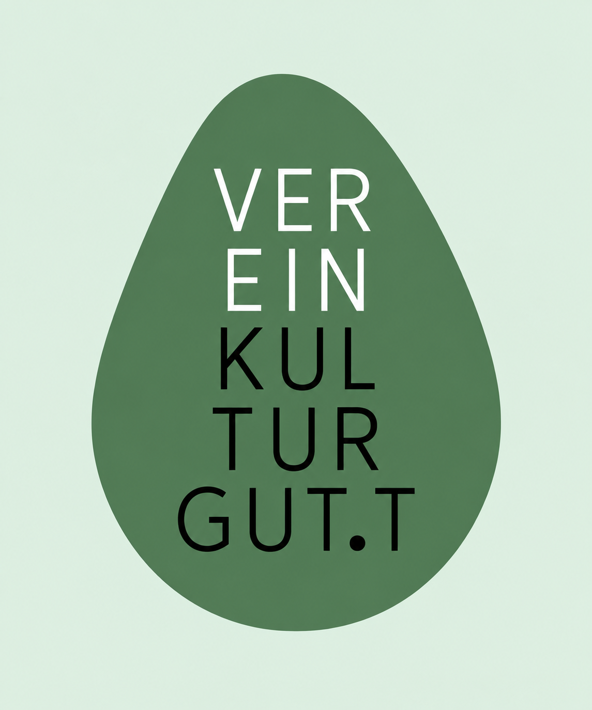

Kultur im
mittleren Ennstal.
KULTURGUT.T ist ein geplanter Kulturverein im Bezirk Liezen. Den Ausgangspunkt bilden Lassing, Selzthal und Liezen, wo bereits erste Zusagen für Räumlichkeiten vorliegen.
Unsere Idee kennenlernenLassing · Selzthal · Liezen

Leerstand sichtbar machen
Der Verein möchte Bewusstsein für leer stehende Gebäude und ungenutzte Räume schaffen. Durch ihre zeitweise Nutzung für kleine Musik- und Theaterveranstaltungen soll sichtbar werden, welchen Beitrag diese Orte zum kulturellen und gemeinschaftlichen Leben leisten können.
KULTURGUT.T beginnt bewusst im kleinen Rahmen und möchte das bestehende Kulturangebot in der Region ergänzen.
Teilhabe ermöglichen
Inklusion und die Einbindung von Familien stehen im Mittelpunkt. Das Angebot soll Menschen unterschiedlicher Generationen und Lebenssituationen offenstehen. Besonders berücksichtigt werden Menschen mit Beeinträchtigungen, Familien mit Kindern und ältere Menschen.
Konzerte sollen vorzugsweise am Nachmittag stattfinden. Das erleichtert die Teilnahme für Menschen, für die abendliche Veranstaltungen wegen familiärer Verpflichtungen oder eingeschränkter Mobilität schwer erreichbar sind. Dazu zählen etwa ältere Menschen, die bei Dunkelheit nicht mehr selbst Auto fahren können oder möchten.
Bei der Auswahl der Räume werden Zugänglichkeit, Erreichbarkeit und Aufenthaltsbedingungen berücksichtigt. Vorhandene Barrieren und Unterstützungsmöglichkeiten sollen vor jeder Veranstaltung verständlich kommuniziert werden.
Musik und Theater
Den Einstieg bilden Musik- und Theaterveranstaltungen mit regionalen und internationalen Kunstschaffenden. Der Schwerpunkt liegt zunächst im mittleren Ennstal.
Die Zusammenarbeit mit bestehenden Kulturinitiativen wird angestrebt. Der Austausch über Programme, Räume und Termine soll Kooperationen ermöglichen und Überschneidungen frühzeitig erkennbar machen.
Umsetzung und Finanzierung
Die Raumzusagen bilden eine erste Grundlage. Für die konkrete Nutzung sind die Eignung der Räume, Nutzungsvereinbarungen und organisatorischen Zuständigkeiten noch zu klären.
Ein Finanzierungsplan soll die Kosten für Räume, Technik, angemessene Honorare, Zugänglichkeit und Öffentlichkeitsarbeit erfassen. Mögliche Einnahmen und Kulturförderungen werden den geplanten Ausgaben gegenübergestellt. Umfang und Durchführung der Veranstaltungen richten sich nach den verfügbaren Mitteln und den jeweiligen räumlichen Voraussetzungen.